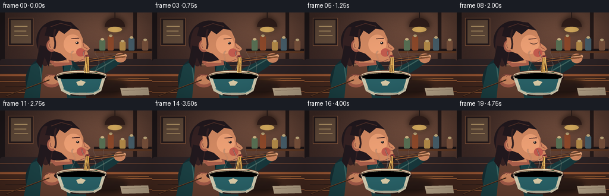
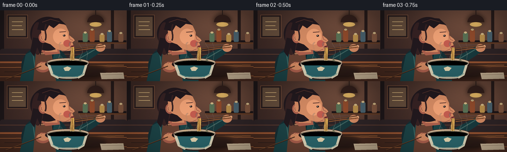
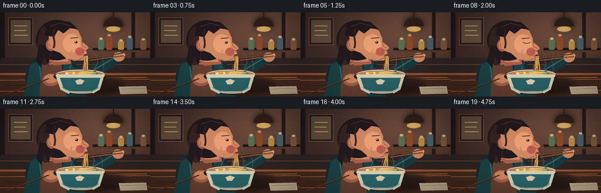
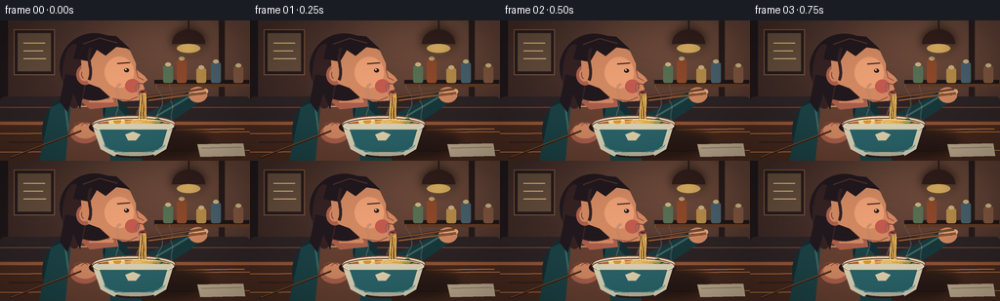

CODING AGENTS AS PIXEL WORLD MODELS
traex/GPT-5.6-Sol · motion_rationality_0000
点击播放 · 原生 RGB 像素
逐轮保存的候选
回放视频、检查图与代码变化。
每份候选均可单独播放。实际图片检查记录在下方工具轨迹中。
候选 01播放与检查图
点击播放 · 原生 RGB 像素


展开代码变化
--- 上一保存版本
+++ 本次保存版本
@@ -0,0 +1,242 @@
+from pathlib import Path
+import math
+import numpy as np
+from PIL import Image, ImageDraw, ImageFilter
+from artifact_io import save
+
+# Hand-drawn, supersampled animation of a warm ramen-shop moment.
+W, H, N = 256, 144, 20
+S = 4
+rng = np.random.default_rng(4217)
+
+def q(v): return int(round(v*S))
+def box(b): return tuple(q(x) for x in b)
+def pts(p): return [(q(x),q(y)) for x,y in p]
+
+class Canvas:
+ def __init__(self, im): self.im=im; self.d=ImageDraw.Draw(im,'RGBA')
+ def ellipse(self,b,fill,outline=None,width=1): self.d.ellipse(box(b),fill=fill,outline=outline,width=q(width))
+ def rect(self,b,fill,outline=None,width=1): self.d.rectangle(box(b),fill=fill,outline=outline,width=q(width))
+ def rr(self,b,r,fill,outline=None,width=1): self.d.rounded_rectangle(box(b),radius=q(r),fill=fill,outline=outline,width=q(width))
+ def poly(self,p,fill): self.d.polygon(pts(p),fill=fill)
+ def line(self,p,fill,width=1,joint='curve'): self.d.line(pts(p),fill=fill,width=q(width),joint=joint)
+ def arc(self,b,a0,a1,fill,width=1): self.d.arc(box(b),a0,a1,fill=fill,width=q(width))
+ def pieslice(self,b,a0,a1,fill): self.d.pieslice(box(b),a0,a1,fill=fill)
+
+def bez(c, p0,p1,p2,p3, fill, width=1, steps=24):
+ pp=[]
+ for i in range(steps+1):
+ t=i/steps; u=1-t
+ x=u**3*p0[0]+3*u*u*t*p1[0]+3*u*t*t*p2[0]+t**3*p3[0]
+ y=u**3*p0[1]+3*u*u*t*p1[1]+3*u*t*t*p2[1]+t**3*p3[1]
+ pp.append((x,y))
+ c.line(pp,fill,width)
+
+def make_background():
+ h,w=H*S,W*S
+ yy,xx=np.mgrid[0:h,0:w]
+ y=yy/S; x=xx/S
+ # Warm restaurant wall with a subtle radial pool of lamplight.
+ glow=np.exp(-((x-184)**2/(2*75**2)+(y-26)**2/(2*52**2)))
+ shade=np.clip((y/144)*0.28,0,1)
+ base=np.zeros((h,w,3),dtype=np.float32)
+ base[...,0]=61+52*glow-13*shade
+ base[...,1]=42+35*glow-12*shade
+ base[...,2]=38+23*glow-8*shade
+ noise=rng.normal(0,1.7,(h,w,1))
+ base=np.clip(base+noise,0,255).astype(np.uint8)
+ im=Image.fromarray(base,'RGB').convert('RGBA'); c=Canvas(im)
+ # timber uprights and framed menu panels
+ c.rect((0,0,8,104),(31,24,26,190)); c.rect((224,0,230,104),(40,28,27,150))
+ c.rect((14,9,56,56),(39,28,29,180),(129,84,59,150),1)
+ c.rect((18,13,52,52),(99,76,59,120))
+ c.line([(24,23),(46,23)],(224,189,129,75),1)
+ c.line([(24,31),(44,31)],(224,189,129,55),1)
+ c.line([(24,39),(47,39)],(224,189,129,48),1)
+ # rear shelf and indistinct jars
+ c.rect((158,61,255,65),(29,22,24,220)); c.rect((158,65,255,68),(97,58,37,120))
+ for x0,col,ht in [(167,(88,112,84,180),18),(181,(143,74,43,170),24),(201,(184,142,74,150),15),(216,(73,97,109,160),21),(239,(129,87,64,170),17)]:
+ c.rr((x0,64-ht,x0+10,64),2,col); c.ellipse((x0+2,61-ht,x0+8,65-ht),(205,180,132,100))
+ # pendant lamp and bloom on a blurred overlay
+ ov=Image.new('RGBA',im.size,(0,0,0,0)); oc=Canvas(ov)
+ oc.line([(193,0),(193,15)],(39,27,25,255),1.4)
+ oc.pieslice((176,9,210,39),180,360,(50,31,27,255))
+ oc.ellipse((181,24,205,33),(255,207,112,190))
+ blur=ov.filter(ImageFilter.GaussianBlur(q(5)))
+ im=Image.alpha_composite(im,blur); im=Image.alpha_composite(im,ov)
+ # distant bench
+ c=Canvas(im); c.rr((0,78,256,111),5,(46,36,38,210)); c.line([(0,89),(256,89)],(114,71,52,80),1)
+ return im
+
+BG=make_background()
+
+def draw_frame(i):
+ t=i/(N-1)
+ # One continuous slurp: the diner leans nearer as the noodle length diminishes.
+ ease=0.5-0.5*math.cos(math.pi*t)
+ bob=0.45*math.sin(t*math.pi*4)
+ hx=1.7*ease
+ hy=2.7*ease+bob
+ im=BG.copy(); c=Canvas(im)
+
+ # Table and warm reflected light.
+ c.rect((0,103,256,144),(71,42,31,255))
+ c.rect((0,104,256,107),(153,86,51,180))
+ for y in [116,135]: c.line([(0,y),(256,y-2)],(205,123,67,27),1)
+ c.line([(9,125),(105,124)],(32,24,23,42),1)
+ c.line([(181,112),(250,111)],(229,142,71,35),1)
+
+ # Soft cast shadows on the table.
+ sh=Image.new('RGBA',im.size,(0,0,0,0)); sc=Canvas(sh)
+ sc.ellipse((72,111,215,139),(16,14,16,130)); sc.ellipse((115,125,205,141),(13,10,11,140))
+ sh=sh.filter(ImageFilter.GaussianBlur(q(4))); im=Image.alpha_composite(im,sh); c=Canvas(im)
+
+ # Torso, sweater, apron: broad simple silhouette reads at small scale.
+ c.ellipse((43,71,139,157),(22,46,51,255))
+ c.poly([(52,89),(82,76),(110,79),(139,108),(145,144),(40,144)],(28,67,70,255))
+ c.line([(66,84),(74,143)],(60,103,99,120),2)
+ c.line([(108,82),(99,144)],(12,37,43,160),2)
+ c.poly([(73,82),(103,80),(113,144),(67,144)],(103,65,50,220))
+ c.line([(78,88),(99,88)],(226,172,119,70),1)
+
+ # Neck tucked forward.
+ skin=(210,137,98,255); skinlight=(233,167,123,255); skinshadow=(170,95,76,255)
+ c.poly([(88+hx,59+hy),(116+hx,61+hy),(121+hx,88+hy),(92+hx,91+hy),(80+hx,80+hy)],skinshadow)
+ c.poly([(95+hx,62+hy),(116+hx,64+hy),(116+hx,84+hy),(91+hx,84+hy)],skin)
+ c.line([(94+hx,78+hy),(112+hx,80+hy)],(124,68,64,70),1)
+
+ # Hair behind the face.
+ hair=(34,25,30,255); hair2=(54,34,35,255); hairhi=(82,49,42,180)
+ c.ellipse((61+hx,13+hy,132+hx,82+hy),hair)
+ c.ellipse((64+hx,24+hy,88+hx,90+hy),hair2)
+ c.poly([(67+hx,55+hy),(61+hx,83+hy),(69+hx,94+hy),(75+hx,75+hy),(82+hx,91+hy),(87+hx,59+hy)],hair)
+
+ # Ear and face in three-quarter profile, nose and pursed slurping lips at right.
+ c.ellipse((78+hx,45+hy,96+hx,66+hy),skinshadow)
+ c.ellipse((81+hx,48+hy,92+hx,62+hy),skin)
+ c.arc((83+hx,50+hy,91+hx,60+hy),115,280,(132,73,66,180),1)
+ face=[(82+hx,31+hy),(96+hx,20+hy),(117+hx,21+hy),(133+hx,31+hy),
+ (139+hx,44+hy),(139+hx,50+hy),(148+hx,57+hy),(151+hx,61+hy),
+ (146+hx,65+hy),(148+hx,70+hy),(144+hx,73+hy),(148+hx,77+hy),
+ (142+hx,82+hy),(126+hx,83+hy),(112+hx,78+hy),(102+hx,69+hy),
+ (91+hx,65+hy),(84+hx,53+hy)]
+ c.poly(face,skin)
+ # cheek light and jaw warmth
+ c.ellipse((107+hx,37+hy,137+hx,69+hy),(236,159,116,65))
+ c.ellipse((128+hx,60+hy,143+hx,74+hy),(193,91,78,42))
+ c.line([(115+hx,80+hy),(132+hx,82+hy),(141+hx,78+hy)],(132,73,64,95),1)
+ # forehead hair cap and loose temple lock
+ c.poly([(75+hx,39+hy),(79+hx,24+hy),(96+hx,14+hy),(119+hx,16+hy),(133+hx,29+hy),(119+hx,27+hy),(108+hx,36+hy),(99+hx,30+hy),(92+hx,42+hy)],hair)
+ c.line([(85+hx,24+hy),(102+hx,18+hy),(120+hx,23+hy)],hairhi,1.3)
+ bez(c,(93+hx,28+hy),(87+hx,42+hy),(96+hx,48+hy),(91+hx,61+hy),hair2,3)
+
+ # Brow, closed smiling eye and nose definition.
+ c.line([(120+hx,44+hy),(133+hx,43+hy)],(74,42,39,220),1.5)
+ blink=1 if i in (8,9) else 0
+ if blink:
+ bez(c,(122+hx,50+hy),(126+hx,53+hy),(132+hx,53+hy),(135+hx,50+hy),(53,34,35,255),1.1)
+ else:
+ c.ellipse((127+hx,49+hy,132+hx,53+hy),(42,31,32,255))
+ c.ellipse((128+hx,49.5+hy,129.5+hx,51+hy),(245,220,191,220))
+ c.line([(139+hx,50+hy),(141+hx,58+hy),(147+hx,61+hy)],(150,78,66,160),1)
+ c.line([(142+hx,64+hy),(147+hx,65+hy)],(121,60,57,100),1)
+ # Pursed lips and dark mouth opening, strongly visible around noodles.
+ mx,my=145.5+hx,74.3+hy
+ c.ellipse((mx-3.8,my-3,mx+4.5,my+3.3),(143,60,58,255))
+ c.ellipse((mx-1.8,my-1.45,mx+2.7,my+1.6),(45,27,28,255))
+ c.line([(mx-3.2,my),(mx+3.6,my+0.1)],(237,137,119,150),.7)
+
+ # Arm reaching from lower right, then hand holding chopsticks.
+ handx=202-2.5*ease; handy=75+1.2*math.sin(t*math.pi)
+ c.poly([(130,117),(153,94),(181,80),(198,70),(211,79),(190,94),(163,111),(149,132)],(24,57,61,255))
+ c.line([(150,104),(179,87),(199,75)],(61,101,97,110),2)
+ c.ellipse((handx-9,handy-7,handx+10,handy+9),skin)
+ # thumb and fingers wrapped around chopsticks
+ c.rr((handx-8,handy-5,handx+11,handy),3,skinlight)
+ c.rr((handx-4,handy,handx+10,handy+5),2.5,skin)
+ c.line([(handx-7,handy-1),(handx+5,handy+1)],(145,77,66,130),.8)
+
+ # Chopsticks lead clearly to the lifted noodles.
+ gripx=151+hx*0.35; gripy=80+hy*0.18
+ c.line([(handx+7,handy-5),(gripx-2,gripy-1)],(53,29,24,255),2.2)
+ c.line([(handx+9,handy-1),(gripx+1,gripy+2)],(84,44,29,255),2.2)
+ c.line([(handx+7,handy-5),(gripx-2,gripy-1)],(218,144,76,180),.65)
+ c.line([(handx+9,handy-1),(gripx+1,gripy+2)],(230,157,82,180),.65)
+
+ # Left hand braces the bowl at the table.
+ c.ellipse((72,106,101,126),skinshadow)
+ c.ellipse((75,105,99,121),skin)
+ for j in range(3): c.arc((74+j*4,104+j*.3,91+j*4,116+j*.3),205,330,(135,72,62,120),.7)
+
+ # Steam BEHIND the bowl/noodles, drifting coherently upward.
+ steam=Image.new('RGBA',im.size,(0,0,0,0)); st=Canvas(steam)
+ for k,(sx,amp,alpha) in enumerate([(120,5,105),(139,4,125),(161,6,95),(177,4,85)]):
+ phase=t*2.2+k*1.15
+ basey=104
+ x0=sx+2*math.sin(phase)
+ bez(st,(x0,basey),(x0-amp,95),(x0+amp,90),(x0-1+amp*math.sin(phase),82),(242,226,205,alpha),1.3)
+ bez(st,(x0-1+amp*math.sin(phase),82),(x0+amp,76),(x0-amp,70),(x0+3*math.cos(phase),65),(249,236,216,max(40,alpha-30)),1.0)
+ steam=steam.filter(ImageFilter.GaussianBlur(q(.55))); im=Image.alpha_composite(im,steam); c=Canvas(im)
+
+ # Bowl rim and broth.
+ c.ellipse((91,99,180,120),(37,25,25,170))
+ c.ellipse((94,97,180,115),(235,219,184,255),(111,66,51,255),1.2)
+ c.ellipse((99,100,175,112),(115,61,35,255))
+ c.ellipse((103,101,171,109),(185,105,44,255))
+ # ingredients (egg, greens, naruto-like fish cake)
+ c.ellipse((111,100,128,108),(244,220,147,255)); c.ellipse((116,101,124,106),(225,151,51,255))
+ c.poly([(153,102),(162,100),(168,104),(160,108)],(42,92,52,255))
+ c.ellipse((134,101,145,108),(235,208,186,255)); c.arc((137,102,143,107),20,310,(214,95,83,255),1)
+ # noodles lying in broth
+ for k in range(5):
+ yy=104+k*.8
+ c.arc((125+k,yy-2,165-k,yy+4),185,350,(239,190,91,220),.8)
+
+ # Bowl body overlays the rear rim.
+ c.poly([(94,106),(178,106),(170,132),(158,139),(116,139),(103,132)],(219,212,184,255))
+ c.ellipse((94,100,179,116),(0,0,0,0),(106,67,56,255),1.3)
+ c.arc((95,100,178,116),0,180,(249,240,211,255),1.2)
+ c.poly([(102,112),(171,112),(166,129),(157,135),(118,135),(108,129)],(43,101,107,255))
+ c.arc((106,118,169,136),5,176,(88,151,150,130),1)
+ c.poly([(128,117),(136,114),(144,117),(139,123),(131,123)],(226,210,173,190))
+ c.ellipse((118,136,158,141),(47,31,29,180))
+ c.ellipse((120,135,157,139),(192,186,163,255))
+
+ # Suspended noodle strands, in front of bowl. Their lower slack is pulled up over time.
+ topy=my+0.6
+ bottom=102-3.7*ease
+ strands=max(3,5-int(ease*2.2))
+ for k in range(strands):
+ x0=mx-1.4+k*1.15
+ xb=145.5+(k-1.5)*2.0 + 1.4*math.sin(t*7+k)
+ wav=1.7*math.sin(t*8+k*1.7)
+ # dark rim gives legibility, golden core gives the noodle body
+ p0=(x0,topy); p1=(x0+wav,84); p2=(xb-wav,93); p3=(xb,bottom)
+ bez(c,p0,p1,p2,p3,(105,60,31,220),2.25,18)
+ bez(c,p0,p1,p2,p3,(244,194,92,255),1.25,18)
+ if k%2==0: bez(c,p0,p1,p2,p3,(255,227,142,180),.42,18)
+ # small broth droplet travels downward from one strand
+ drop_phase=(t*1.7)%1
+ dy=topy+(bottom-topy)*drop_phase
+ dx=147+1.2*math.sin(t*10)
+ c.ellipse((dx-1,dy-1,dx+1,dy+1.7),(227,163,72,220))
+
+ # Bowl edge highlight and tiny steam haze.
+ c.arc((96,101,178,115),185,355,(255,239,195,180),.8)
+
+ # Foreground utensil and napkin for depth.
+ c.poly([(202,127),(249,126),(251,139),(205,140)],(197,177,148,170))
+ c.line([(206,131),(247,130)],(126,102,83,70),.7)
+ c.line([(10,141),(83,113)],(53,31,24,230),2)
+ c.line([(11,140),(84,112)],(221,143,69,150),.55)
+
+ # Gentle cinematic vignette.
+ arr=np.asarray(im.convert('RGB')).astype(np.float32)
+ yy,xx=np.mgrid[0:H*S,0:W*S]; nx=(xx-W*S/2)/(W*S/2); ny=(yy-H*S/2)/(H*S/2)
+ vig=np.clip(1-.15*(nx*nx+ny*ny),.76,1)[...,None]
+ arr=np.clip(arr*vig,0,255).astype(np.uint8)
+ out=Image.fromarray(arr).resize((W,H),Image.Resampling.LANCZOS)
+ return np.asarray(out,dtype=np.uint8)
+
+frames=np.stack([draw_frame(i) for i in range(N)],axis=0)
+save(frames,Path(__file__).resolve().parent)
候选 02播放与检查图
点击播放 · 原生 RGB 像素


展开代码变化
--- 上一保存版本
+++ 本次保存版本
@@ -45,7 +45,7 @@
base[...,2]=38+23*glow-8*shade
noise=rng.normal(0,1.7,(h,w,1))
base=np.clip(base+noise,0,255).astype(np.uint8)
- im=Image.fromarray(base,'RGB').convert('RGBA'); c=Canvas(im)
+ im=Image.fromarray(base).convert('RGBA'); c=Canvas(im)
# timber uprights and framed menu panels
c.rect((0,0,8,104),(31,24,26,190)); c.rect((224,0,230,104),(40,28,27,150))
c.rect((14,9,56,56),(39,28,29,180),(129,84,59,150),1)
@@ -194,7 +194,9 @@
# Bowl body overlays the rear rim.
c.poly([(94,106),(178,106),(170,132),(158,139),(116,139),(103,132)],(219,212,184,255))
- c.ellipse((94,100,179,116),(0,0,0,0),(106,67,56,255),1.3)
+ # Re-state the rim contour without a transparent fill (which would punch a
+ # hole through the painted ceramic body).
+ c.arc((94,100,179,116),0,360,(106,67,56,255),1.3)
c.arc((95,100,178,116),0,180,(249,240,211,255),1.2)
c.poly([(102,112),(171,112),(166,129),(157,135),(118,135),(108,129)],(43,101,107,255))
c.arc((106,118,169,136),5,176,(88,151,150,130),1)
可观测工具轨迹
实际执行的命令与返回图片。
命令 1exit 0
/bin/bash -lc "cat prompt.txt && printf '\\n---RULES---\\n' && cat GENERATION_RULES.md && printf '\\n---SPEC---\\n' && cat task_spec.json"
命令 2exit 0
/bin/bash -lc "find . -maxdepth 2 -type f -printf '%p\\n' | sort; printf '\\nTOOLS\\n'; command -v ffmpeg || true; command -v python3 || true; python3 - <<'PY' mods=['PIL','numpy','cv2','imageio','moviepy','cairo'] for m in mods: try: x=__import__(m); print(m,'OK',getattr(x,'__version__','')) except Exception as e: print(m,'NO') PY"
命令 3exit 0
/bin/bash -lc 'cat artifact_io.py'
命令 4exit 0
/bin/bash -lc "cat > generate.py <<'PY'
from pathlib import Path
import math
import numpy as np
from PIL import Image, ImageDraw, ImageFilter
from artifact_io import save
# Hand-drawn, supersampled animation of a warm ramen-shop moment.
W, H, N = 256, 144, 20
S = 4
rng = np.random.default_rng(4217)
def q(v): return int(round(v*S))
def box(b): return tuple(q(x) for x in b)
def pts(p): return [(q(x),q(y)) for x,y in p]
class Canvas:
def __init__(self, im): self.im=im; self.d=ImageDraw.Draw(im,'RGBA')
def ellipse(self,b,fill,outline=None,width=1): self.d.ellipse(box(b),fill=fill,outline=outline,width=q(width))
def rect(self,b,fill,outline=None,width=1): self.d.rectangle(box(b),fill=fill,outline=outline,width=q(width))
def rr(self,b,r,fill,outline=None,width=1): self.d.rounded_rectangle(box(b),radius=q(r),fill=fill,outline=outline,width=q(width))
def poly(self,p,fill): self.d.polygon(pts(p),fill=fill)
def line(self,p,fill,width=1,joint='curve'): self.d.line(pts(p),fill=fill,width=q(width),joint=joint)
def arc(self,b,a0,a1,fill,width=1): self.d.arc(box(b),a0,a1,fill=fill,width=q(width))
def pieslice(self,b,a0,a1,fill): self.d.pieslice(box(b),a0,a1,fill=fill)
def bez(c, p0,p1,p2,p3, fill, width=1, steps=24):
pp=[]
for i in range(steps+1):
t=i/steps; u=1-t
x=u**3*p0[0]+3*u*u*t*p1[0]+3*u*t*t*p2[0]+t**3*p3[0]
y=u**3*p0[1]+3*u*u*t*p1[1]+3*u*t*t*p2[1]+t**3*p3[1]
pp.append((x,y))
c.line(pp,fill,width)
def make_background():
h,w=H*S,W*S
yy,xx=np.mgrid[0:h,0:w]
y=yy/S; x=xx/S
# Warm restaurant wall with a subtle radial pool of lamplight.
glow=np.exp(-((x-184)**2/(2*75**2)+(y-26)**2/(2*52**2)))
shade=np.clip((y/144)*0.28,0,1)
base=np.zeros((h,w,3),dtype=np.float32)
base[...,0]=61+52*glow-13*shade
base[...,1]=42+35*glow-12*shade
base[...,2]=38+23*glow-8*shade
noise=rng.normal(0,1.7,(h,w,1))
base=np.clip(base+noise,0,255).astype(np.uint8)
im=Image.fromarray(base,'RGB').convert('RGBA'); c=Canvas(im)
# timber uprights and framed menu panels
c.rect((0,0,8,104),(31,24,26,190)); c.rect((224,0,230,104),(40,28,27,150))
c.rect((14,9,56,56),(39,28,29,180),(129,84,59,150),1)
c.rect((18,13,52,52),(99,76,59,120))
c.line([(24,23),(46,23)],(224,189,129,75),1)
c.line([(24,31),(44,31)],(224,189,129,55),1)
c.line([(24,39),(47,39)],(224,189,129,48),1)
# rear shelf and indistinct jars
c.rect((158,61,255,65),(29,22,24,220)); c.rect((158,65,255,68),(97,58,37,120))
for x0,col,ht in [(167,(88,112,84,180),18),(181,(143,74,43,170),24),(201,(184,142,74,150),15),(216,(73,97,109,160),21),(239,(129,87,64,170),17)]:
c.rr((x0,64-ht,x0+10,64),2,col); c.ellipse((x0+2,61-ht,x0+8,65-ht),(205,180,132,100))
# pendant lamp and bloom on a blurred overlay
ov=Image.new('RGBA',im.size,(0,0,0,0)); oc=Canvas(ov)
oc.line([(193,0),(193,15)],(39,27,25,255),1.4)
oc.pieslice((176,9,210,39),180,360,(50,31,27,255))
oc.ellipse((181,24,205,33),(255,207,112,190))
blur=ov.filter(ImageFilter.GaussianBlur(q(5)))
im=Image.alpha_composite(im,blur); im=Image.alpha_composite(im,ov)
# distant bench
c=Canvas(im); c.rr((0,78,256,111),5,(46,36,38,210)); c.line([(0,89),(256,89)],(114,71,52,80),1)
return im
BG=make_background()
def draw_frame(i):
t=i/(N-1)
# One continuous slurp: the diner leans nearer as the noodle length diminishes.
ease=0.5-0.5*math.cos(math.pi*t)
bob=0.45*math.sin(t*math.pi*4)
hx=1.7*ease
hy=2.7*ease+bob
im=BG.copy(); c=Canvas(im)
# Table and warm reflected light.
c.rect((0,103,256,144),(71,42,31,255))
c.rect((0,104,256,107),(153,86,51,180))
for y in [116,135]: c.line([(0,y),(256,y-2)],(205,123,67,27),1)
c.line([(9,125),(105,124)],(32,24,23,42),1)
c.line([(181,112),(250,111)],(229,142,71,35),1)
# Soft cast shadows on the table.
sh=Image.new('RGBA',im.size,(0,0,0,0)); sc=Canvas(sh)
sc.ellipse((72,111,215,139),(16,14,16,130)); sc.ellipse((115,125,205,141),(13,10,11,140))
sh=sh.filter(ImageFilter.GaussianBlur(q(4))); im=Image.alpha_composite(im,sh); c=Canvas(im)
# Torso, sweater, apron: broad simple silhouette reads at small scale.
c.ellipse((43,71,139,157),(22,46,51,255))
c.poly([(52,89),(82,76),(110,79),(139,108),(145,144),(40,144)],(28,67,70,255))
c.line([(66,84),(74,143)],(60,103,99,120),2)
c.line([(108,82),(99,144)],(12,37,43,160),2)
c.poly([(73,82),(103,80),(113,144),(67,144)],(103,65,50,220))
c.line([(78,88),(99,88)],(226,172,119,70),1)
# Neck tucked forward.
skin=(210,137,98,255); skinlight=(233,167,123,255); skinshadow=(170,95,76,255)
c.poly([(88+hx,59+hy),(116+hx,61+hy),(121+hx,88+hy),(92+hx,91+hy),(80+hx,80+hy)],skinshadow)
c.poly([(95+hx,62+hy),(116+hx,64+hy),(116+hx,84+hy),(91+hx,84+hy)],skin)
c.line([(94+hx,78+hy),(112+hx,80+hy)],(124,68,64,70),1)
# Hair behind the face.
hair=(34,25,30,255); hair2=(54,34,35,255); hairhi=(82,49,42,180)
c.ellipse((61+hx,13+hy,132+hx,82+hy),hair)
c.ellipse((64+hx,24+hy,88+hx,90+hy),hair2)
c.poly([(67+hx,55+hy),(61+hx,83+hy),(69+hx,94+hy),(75+hx,75+hy),(82+hx,91+hy),(87+hx,59+hy)],hair)
# Ear and face in three-quarter profile, nose and pursed slurping lips at right.
c.ellipse((78+hx,45+hy,96+hx,66+hy),skinshadow)
c.ellipse((81+hx,48+hy,92+hx,62+hy),skin)
c.arc((83+hx,50+hy,91+hx,60+hy),115,280,(132,73,66,180),1)
face=[(82+hx,31+hy),(96+hx,20+hy),(117+hx,21+hy),(133+hx,31+hy),
(139+hx,44+hy),(139+hx,50+hy),(148+hx,57+hy),(151+hx,61+hy),
(146+hx,65+hy),(148+hx,70+hy),(144+hx,73+hy),(148+hx,77+hy),
(142+hx,82+hy),(126+hx,83+hy),(112+hx,78+hy),(102+hx,69+hy),
(91+hx,65+hy),(84+hx,53+hy)]
c.poly(face,skin)
# cheek light and jaw warmth
c.ellipse((107+hx,37+hy,137+hx,69+hy),(236,159,116,65))
c.ellipse((128+hx,60+hy,143+hx,74+hy),(193,91,78,42))
c.line([(115+hx,80+hy),(132+hx,82+hy),(141+hx,78+hy)],(132,73,64,95),1)
# forehead hair cap and loose temple lock
c.poly([(75+hx,39+hy),(79+hx,24+hy),(96+hx,14+hy),(119+hx,16+hy),(133+hx,29+hy),(119+hx,27+hy),(108+hx,36+hy),(99+hx,30+hy),(92+hx,42+hy)],hair)
c.line([(85+hx,24+hy),(102+hx,18+hy),(120+hx,23+hy)],hairhi,1.3)
bez(c,(93+hx,28+hy),(87+hx,42+hy),(96+hx,48+hy),(91+hx,61+hy),hair2,3)
# Brow, closed smiling eye and nose definition.
c.line([(120+hx,44+hy),(133+hx,43+hy)],(74,42,39,220),1.5)
blink=1 if i in (8,9) else 0
if blink:
bez(c,(122+hx,50+hy),(126+hx,53+hy),(132+hx,53+hy),(135+hx,50+hy),(53,34,35,255),1.1)
else:
c.ellipse((127+hx,49+hy,132+hx,53+hy),(42,31,32,255))
c.ellipse((128+hx,49.5+hy,129.5+hx,51+hy),(245,220,191,220))
c.line([(139+hx,50+hy),(141+hx,58+hy),(147+hx,61+hy)],(150,78,66,160),1)
c.line([(142+hx,64+hy),(147+hx,65+hy)],(121,60,57,100),1)
# Pursed lips and dark mouth opening, strongly visible around noodles.
mx,my=145.5+hx,74.3+hy
c.ellipse((mx-3.8,my-3,mx+4.5,my+3.3),(143,60,58,255))
c.ellipse((mx-1.8,my-1.45,mx+2.7,my+1.6),(45,27,28,255))
c.line([(mx-3.2,my),(mx+3.6,my+0.1)],(237,137,119,150),.7)
# Arm reaching from lower right, then hand holding chopsticks.
handx=202-2.5*ease; handy=75+1.2*math.sin(t*math.pi)
c.poly([(130,117),(153,94),(181,80),(198,70),(211,79),(190,94),(163,111),(149,132)],(24,57,61,255))
c.line([(150,104),(179,87),(199,75)],(61,101,97,110),2)
c.ellipse((handx-9,handy-7,handx+10,handy+9),skin)
# thumb and fingers wrapped around chopsticks
c.rr((handx-8,handy-5,handx+11,handy),3,skinlight)
c.rr((handx-4,handy,handx+10,handy+5),2.5,skin)
c.line([(handx-7,handy-1),(handx+5,handy+1)],(145,77,66,130),.8)
# Chopsticks lead clearly to the lifted noodles.
gripx=151+hx*0.35; gripy=80+hy*0.18
c.line([(handx+7,handy-5),(gripx-2,gripy-1)],(53,29,24,255),2.2)
c.line([(handx+9,handy-1),(gripx+1,gripy+2)],(84,44,29,255),2.2)
c.line([(handx+7,handy-5),(gripx-2,gripy-1)],(218,144,76,180),.65)
c.line([(handx+9,handy-1),(gripx+1,gripy+2)],(230,157,82,180),.65)
# Left hand braces the bowl at the table.
c.ellipse((72,106,101,126),skinshadow)
c.ellipse((75,105,99,121),skin)
for j in range(3): c.arc((74+j*4,104+j*.3,91+j*4,116+j*.3),205,330,(135,72,62,120),.7)
# Steam BEHIND the bowl/noodles, drifting coherently upward.
steam=Image.new('RGBA',im.size,(0,0,0,0)); st=Canvas(steam)
for k,(sx,amp,alpha) in enumerate([(120,5,105),(139,4,125),(161,6,95),(177,4,85)]):
phase=t*2.2+k*1.15
basey=104
x0=sx+2*math.sin(phase)
bez(st,(x0,basey),(x0-amp,95),(x0+amp,90),(x0-1+amp*math.sin(phase),82),(242,226,205,alpha),1.3)
bez(st,(x0-1+amp*math.sin(phase),82),(x0+amp,76),(x0-amp,70),(x0+3*math.cos(phase),65),(249,236,216,max(40,alpha-30)),1.0)
steam=steam.filter(ImageFilter.GaussianBlur(q(.55))); im=Image.alpha_composite(im,steam); c=Canvas(im)
# Bowl rim and broth.
c.ellipse((91,99,180,120),(37,25,25,170))
c.ellipse((94,97,180,115),(235,219,184,255),(111,66,51,255),1.2)
c.ellipse((99,100,175,112),(115,61,35,255))
c.ellipse((103,101,171,109),(185,105,44,255))
# ingredients (egg, greens, naruto-like fish cake)
c.ellipse((111,100,128,108),(244,220,147,255)); c.ellipse((116,101,124,106),(225,151,51,255))
c.poly([(153,102),(162,100),(168,104),(160,108)],(42,92,52,255))
c.ellipse((134,101,145,108),(235,208,186,255)); c.arc((137,102,143,107),20,310,(214,95,83,255),1)
# noodles lying in broth
for k in range(5):
yy=104+k*.8
c.arc((125+k,yy-2,165-k,yy+4),185,350,(239,190,91,220),.8)
# Bowl body overlays the rear rim.
c.poly([(94,106),(178,106),(170,132),(158,139),(116,139),(103,132)],(219,212,184,255))
c.ellipse((94,100,179,116),(0,0,0,0),(106,67,56,255),1.3)
c.arc((95,100,178,116),0,180,(249,240,211,255),1.2)
c.poly([(102,112),(171,112),(166,129),(157,135),(118,135),(108,129)],(43,101,107,255))
c.arc((106,118,169,136),5,176,(88,151,150,130),1)
c.poly([(128,117),(136,114),(144,117),(139,123),(131,123)],(226,210,173,190))
c.ellipse((118,136,158,141),(47,31,29,180))
c.ellipse((120,135,157,139),(192,186,163,255))
# Suspended noodle strands, in front of bowl. Their lower slack is pulled up over time.
topy=my+0.6
bottom=102-3.7*ease
strands=max(3,5-int(ease*2.2))
for k in range(strands):
x0=mx-1.4+k*1.15
xb=145.5+(k-1.5)*2.0 + 1.4*math.sin(t*7+k)
wav=1.7*math.sin(t*8+k*1.7)
# dark rim gives legibility, golden core gives the noodle body
p0=(x0,topy); p1=(x0+wav,84); p2=(xb-wav,93); p3=(xb,bottom)
bez(c,p0,p1,p2,p3,(105,60,31,220),2.25,18)
bez(c,p0,p1,p2,p3,(244,194,92,255),1.25,18)
if k%2==0: bez(c,p0,p1,p2,p3,(255,227,142,180),.42,18)
# small broth droplet travels downward from one strand
drop_phase=(t*1.7)%1
dy=topy+(bottom-topy)*drop_phase
dx=147+1.2*math.sin(t*10)
c.ellipse((dx-1,dy-1,dx+1,dy+1.7),(227,163,72,220))
# Bowl edge highlight and tiny steam haze.
c.arc((96,101,178,115),185,355,(255,239,195,180),.8)
# Foreground utensil and napkin for depth.
c.poly([(202,127),(249,126),(251,139),(205,140)],(197,177,148,170))
c.line([(206,131),(247,130)],(126,102,83,70),.7)
c.line([(10,141),(83,113)],(53,31,24,230),2)
c.line([(11,140),(84,112)],(221,143,69,150),.55)
# Gentle cinematic vignette.
arr=np.asarray(im.convert('RGB')).astype(np.float32)
yy,xx=np.mgrid[0:H*S,0:W*S]; nx=(xx-W*S/2)/(W*S/2); ny=(yy-H*S/2)/(H*S/2)
vig=np.clip(1-.15*(nx*nx+ny*ny),.76,1)[...,None]
arr=np.clip(arr*vig,0,255).astype(np.uint8)
out=Image.fromarray(arr).resize((W,H),Image.Resampling.LANCZOS)
return np.asarray(out,dtype=np.uint8)
frames=np.stack([draw_frame(i) for i in range(N)],axis=0)
save(frames,Path(__file__).resolve().parent)
PY
python3 generate.py
ls -lh pixels.npz inspection.png index.html
"命令 5exit 0
/bin/bash -lc 'git status --short 2>/dev/null || true'
命令 6exit 0
/bin/bash -lc "python3 generate.py && python3 - <<'PY'
import numpy as np
from PIL import Image
z=np.load('pixels.npz')['pixels']
print('packed',z.shape,z.dtype,'unique frame0',len(np.unique(z[:,:,0])))
ims=np.stack([np.asarray(Image.open(f'frames/{i:02d}.png')) for i in range(20)])
print('frames',ims.shape,ims.dtype,'range',ims.min(),ims.max())
d=np.mean(np.abs(np.diff(ims.astype(float),axis=0)),axis=(1,2,3))
print('mean consecutive RGB deltas:',np.round(d,3))
print('all distinct:',len({x.tobytes() for x in ims})==20)
PY"保存候选 2 份；完成命令 6 次；可验证图片返回 0 张。原始 API 响应与完整日志保留在本地。